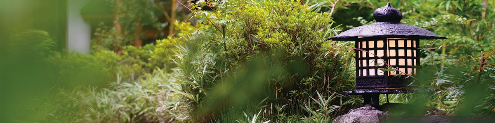

客室Rooms客房
十二の趣Twelve Moods十二种情致
十二の趣 全室離れの露天風呂付スイートルーム
Twelve moods — all-detached suites with private open-air baths
十二种情致 · 全房独栋温泉套房
4,000坪の広大な敷地の中にある わずか十二棟の離れ宿は そのすべてがスイートルーム。伝統的な数寄屋造りとレトロモダンが融合した客室すべてに 源泉かけ流しの露天風呂を併設。プライベートな空間としてご利用頂けます。
Within a 4,000-tsubo (over 13,000 m²) estate lie only twelve detached villas — each a suite. Traditional sukiya-style blended with retro-modern, every villa with its own natural hot-spring open-air bath.
4,000 坪的广袤庭园内，仅设十二栋独立别墅。传统数寄屋建筑与复古摩登相融，每一间皆附源泉挂流的露天温泉。


他のお部屋のご案内Other Villas其他客房
各お部屋の詳細ページは順次公開中です。ご希望のお部屋のご相談はお気軽にお問い合わせ下さいませ。 Detail pages for each villa are being published in sequence. Please enquire freely about any specific room. 各客房详细页正在陆续公开。如需咨询具体房型，敬请随时联络。
お問い合わせEnquire咨询